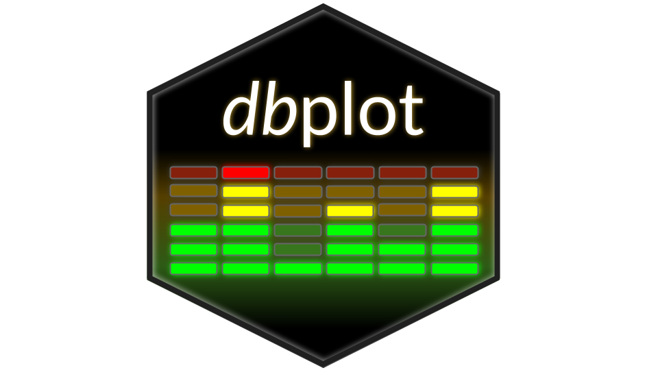

dbplot: Simplifies Plotting Data Inside Databases
Source:R/dbplot-package.R
dbplot-package.RdLeverages 'dplyr' to process the calculations of a plot inside a database. This package provides helper functions that abstract the work at three levels: outputs a 'ggplot', outputs the calculations, outputs the formula needed to calculate bins.
The dbplot package provides functions to create plots using data that resides in databases or remote data sources. It leverages dplyr and dbplyr to push computations to the database, allowing you to visualize large datasets without loading them entirely into R memory.
Details
## Main Features
dbplot provides three levels of functionality:
1. **Plot Functions** - Functions that output ggplot2 objects: - [dbplot_histogram()] - Histogram plots - [dbplot_bar()] - Bar plots for discrete variables - [dbplot_line()] - Line plots for discrete variables - [dbplot_raster()] - Raster/heatmap plots for two continuous variables - [dbplot_boxplot()] - Boxplot for grouped continuous data
2. **Computation Functions** - Functions that return data frames with aggregated data: - [db_compute_bins()] - Histogram bins and counts - [db_compute_count()] - Counts per discrete value - [db_compute_raster()] - Aggregated data per x/y intersection - [db_compute_raster2()] - Raster data with box coordinates - [db_compute_boxplot()] - Boxplot statistics
3. **Utility Functions** - Building blocks for custom operations: - [db_bin()] - Creates binning formulas for use in dplyr verbs
## Database Compatibility
dbplot works with any database backend supported by dplyr/dbplyr, including: - SQLite - PostgreSQL - MySQL/MariaDB - SQL Server - Oracle - Spark (via sparklyr)
## Minimum Requirements
- R >= 4.1.0 (for native pipe `|>` support) - dplyr >= 1.0.0 - ggplot2 >= 3.3.0 - rlang >= 1.0.0 - purrr (any version)
## Usage Philosophy
The package follows these principles:
1. **Push Computations to Database**: All aggregations happen in the database, minimizing data transfer and memory usage.
2. **Familiar dplyr Syntax**: Uses standard dplyr/tidyverse patterns, making it easy to integrate into existing workflows.
3. **Lazy Evaluation**: Leverages dplyr's lazy evaluation to build efficient database queries.
4. **ggplot2 Output**: Plot functions return ggplot2 objects that can be further customized using standard ggplot2 functions.
## Breaking Changes in 0.4.0
Version 0.4.0 introduced some breaking changes:
- **No longer exports ` load magrittr explicitly with `library(magrittr)`.
- **Minimum R version increased**: Now requires R >= 4.1.0 (previously >= 3.1).
- **Modern dependencies**: Updated to require dplyr >= 1.0.0, rlang >= 1.0.0, and other modern package versions.
See also
Useful links:
Useful links: - Report bugs: <https://github.com/edgararuiz/dbplot/issues> - Database connections: <https://solutions.posit.co/connections/db/> - Spark connections: <https://spark.posit.co> - dplyr documentation: <https://dplyr.tidyverse.org/> - dbplyr documentation: <https://dbplyr.tidyverse.org/>
Author
Maintainer: Edgar Ruiz edgararuiz@gmail.com
Examples
if (FALSE) { # \dontrun{
library(dplyr)
library(dbplot)
library(DBI)
# Connect to database
con <- dbConnect(RSQLite::SQLite(), ":memory:")
db_mtcars <- copy_to(con, mtcars, "mtcars")
# Create histogram
db_mtcars |>
dbplot_histogram(mpg)
# Create bar plot with custom aggregation
db_mtcars |>
dbplot_bar(cyl, avg_mpg = mean(mpg))
# Get computation results for custom plotting
db_mtcars |>
db_compute_bins(mpg, bins = 20) |>
ggplot2::ggplot() +
ggplot2::geom_col(ggplot2::aes(mpg, count))
# Use db_bin() directly in dplyr
db_mtcars |>
group_by(bin = !!db_bin(mpg, bins = 10)) |>
count()
dbDisconnect(con)
} # }